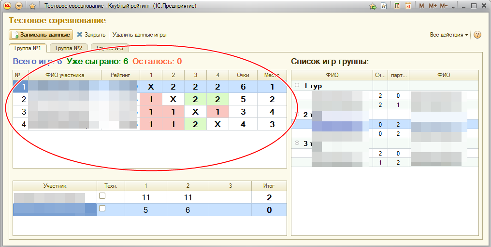

Работа с групповым этапом
Для быстрого ввода партий в основной таблице:

Что бы, быстро ввести сыгранную игру необходимо:
-
Выделить ячейку игры, выигравшего участника.
-
Ввести количество проигранных партий.
-
0 - не выиграл ничего.
-
1 - выиграл один сет.
-
2 - выиграл два сета.
-
3 - выиграл три сета.
-
Т (в русской раскладке,регистр не имеет значения) - значит сопернику устанавливается техническо поражение.